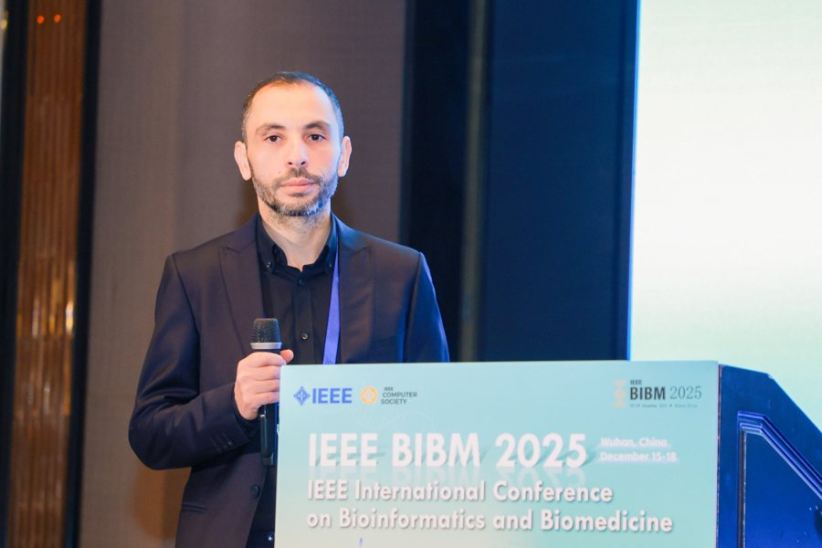
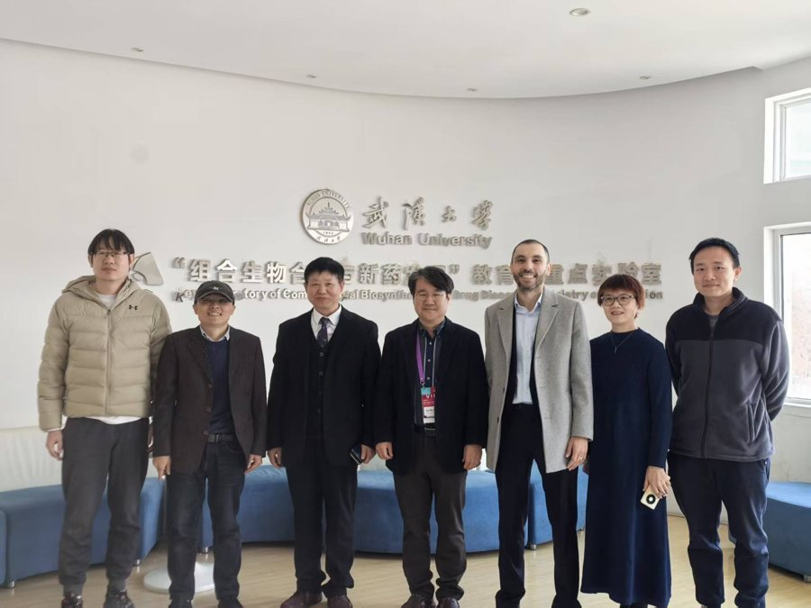
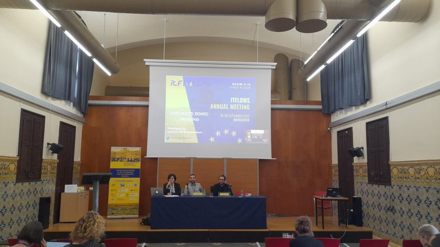
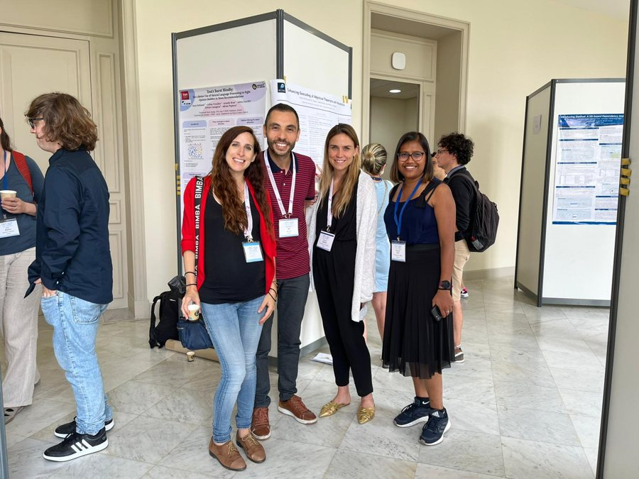

Research
Research organised into coherent programmes rather than isolated topics. Dr Afli's current focus centres on inclusive and multilingual language models — the theme he deputy-leads in Rinn Artificial Intelligence — which connects with, but does not replace, his wider programmes in evaluation science, trustworthy AI and AI for biology.
Human-Centred AI
Studying AI as a socio-technical and cultural system: algorithmic accountability, interpretability, and the human and societal dimensions of intelligent systems.
Multilingual & Culturally Aware AI
Cross-lingual and cultural reasoning, low-resource and dialectal NLP (with emphasis on Arabic), tokenisation, and multilingual evaluation.
Trustworthy AI, Safety & Governance
Robustness, uncertainty, fairness, explainability, privacy-preserving and federated learning, and AI governance.
Evaluation Science & LLM-as-a-Judge
Evaluation as measurement science: distribution-based evaluation, dynamic and robustness-aware benchmarks, and the reliability of LLM-as-a-judge.
AI for Healthcare, Biology & Genomics
Machine learning for genomics, microbiome analysis, and biomedical and clinical data, including foundation models for biological data.
Responsible Innovation & Commercialisation
Translating research into responsible, human-centred products and services through spin-outs, industry partnerships and commercialisation.
Current research agenda
- Inclusive multilingual language models — Developing and evaluating models that work reliably across high-resource and under-resourced languages.
- Cultural reasoning in generative AI — Investigating how language models interpret culturally specific knowledge, values and reasoning patterns.
- Reliable multilingual evaluation — Studying the limitations of automated judges, benchmarks and evaluation protocols across languages and cultures.
- Inclusive translation technologies — Designing translation methods that preserve meaning, cultural context, sentiment and specialist terminology.
- Human-centred AI evaluation — Combining expert, community and user evaluation with technical metrics.
- AI for health and scientific domains — Applying language models, genomic foundation models and trustworthy machine learning to healthcare and biological research.
- Research translation and innovation — Connecting foundational research with public-sector, education, industry and societal applications.



